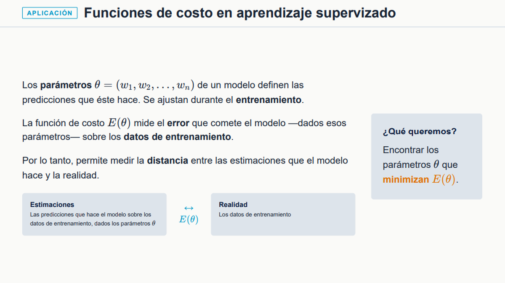
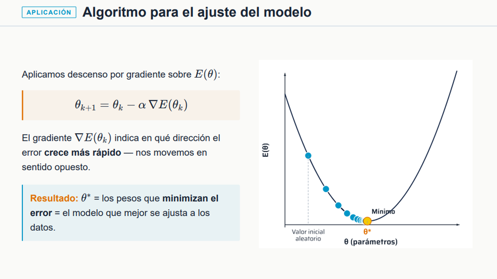
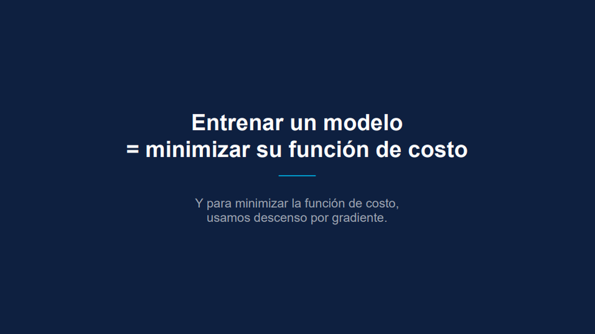
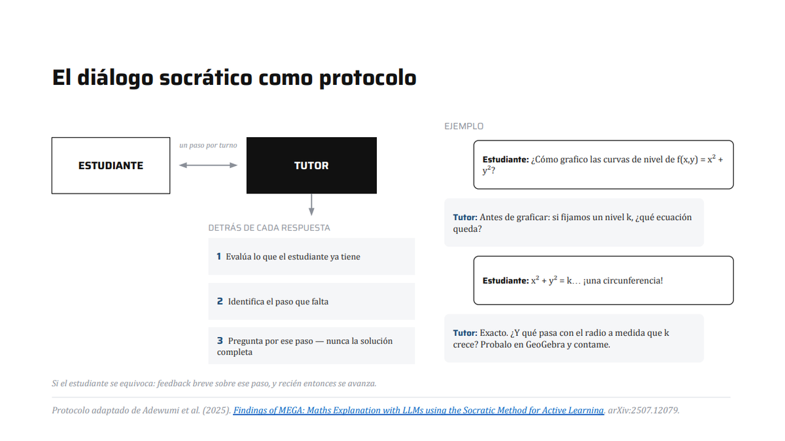
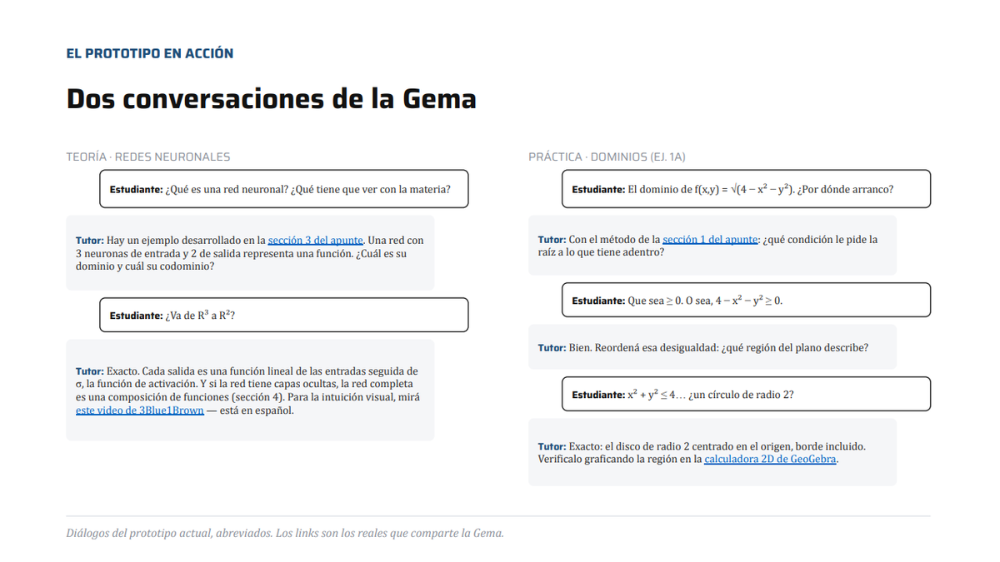
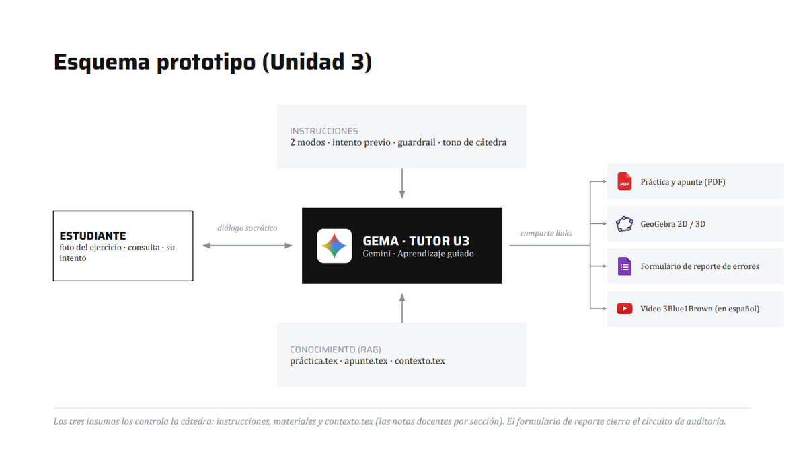

Desarrollé un sistema de recomendación que combina múltiples técnicas de ciencia de datos para proponer libros dentro del catálogo de una librería o biblioteca, a partir de una conversación corta con el lector.
Implementé una feature para digitalizar el stock de librerías de segunda mano a partir de fotos de estanterías mediante IA, que habilita la creación de catálogos digitales que los libreros pueden compartir en redes sociales.
Diseñé un recomendador conversacional basado en RAG que traduce las respuestas del lector a embeddings para encontrar los libros más afines del catálogo, y utiliza un modelo de lenguaje para generar preguntas profundas y redactar la recomendación.
Realicé un piloto con más de 300 estudiantes de la UBA, en el que el 68 % de las conversaciones terminó en una recomendación en unos 2 minutos y el 83 % de las valoradas aceptó al menos un libro.
Desarrollé y difundí una aplicación para memorizar conceptos y fórmulas matemáticas que tuvo más de 3.000 usuarios y 100.000 ejercicios resueltos hasta la fecha en Argentina y Uruguay.
Construí un sistema de rating que estima la habilidad del usuario y la dificultad del contenido, logrando junto a otras características del producto una experiencia de aprendizaje dinámica y única.
Corrí experimentos A/B y recolecté feedback sobre las distintas etapas de uso del producto y prioricé las features a desarrollar que efectivamente mejoraron las métricas de activación, retención y experiencia.
Dicté, junto a ex compañeros de Accenture, un bootcamp remoto de ocho clases para formar analistas de datos, cubriendo el recorrido completo del dato a partir de un proyecto integrador basado en un caso de negocio.
Compartí recursos y dicté clases en conjunto con los docentes de la materia Análisis Matemático II de mi carrera facilitando y motivando la interpretación de conceptos abstractos de la materia a través de aplicaciones de los mismos en ciencia de datos.






2025
Artículo2025
Distribución Normal y Media Maratón
Recopilé y normalicé los resultados de todas las ediciones de la Media Maratón de Buenos Aires desde 2022 y publiqué las 86.000 filas como dataset abierto en Kaggle. Con esos datos analicé las edades y los tiempos de casi 25.000 corredores y verifiqué que los tiempos siguen una distribución normal, con poca variación entre grupos de edad.
Extraje mediante scraping más de 8.100 publicaciones de propiedades en venta del partido de General San Martín y las utilicé para analizar la distribución de precios mediante mapas.